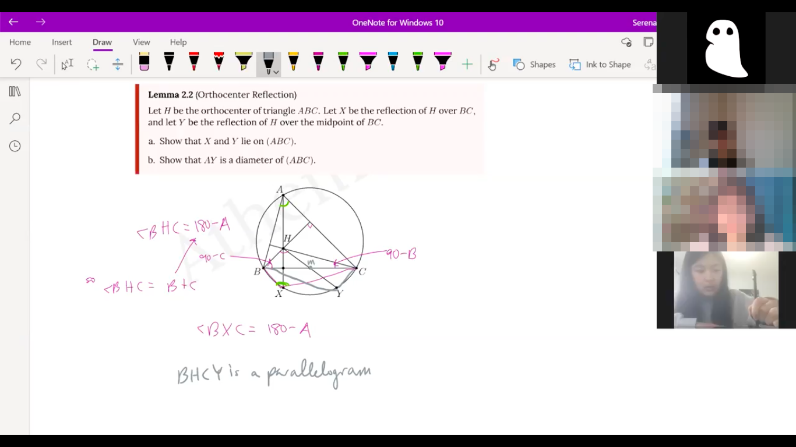

Virtual Program
In the 2022-2023 school year, our virtual program will be run twice.| Date | Fall '22 | Spring '23 |
|---|---|---|
| Application Opens | Aug. 10th | Dec. 18th |
| Application Due | Sep. 3rd | Jan. 14th |
| Opening | Sep. 24th | Feb. 11th |
| Closing | Dec. 17th | May 6th |
What's Included
The best way to think of the virtual program is like a math summer camp, but virtual, at 25% intensity, and during the school year. It's much more than just the math class you go to every two weeks; we have dedicated social time, a virtual lounge, office hours, and even individual check-ins with your teachers. Not just a math class—full package included.
We work on a biweekly (two weeks) schedule that repeats six times, for a twelve-week program in total. The exact times are a bit vague because we set them differently each session to help adjust to student schedules, but here is the schedule:
| Time | Odd Week | Even Week |
|---|---|---|
| Sunday Evening | Coffee | Coffee |
| Tuesday Evening* | Text OH | Text OH |
| Wednesday Evening* | Live OH | Live OH |
| Saturday Afternoon | Class | Check-in |
| Saturday Evening | Math-vent | CBE |
| 24/7 | Discord Lounge | Discord Lounge |
*: tentative
In order to take full advantage of the program, we estimate Athemath to be a 2-3 hour/week time commitment. But the caveat here is that if you're already spending that much time working on math on your own, a lot of Athemath activities will get absorbed into your regular math schedule. That is, Athemath isn't extra work on top of your individual math work: it's supplemental and helps support you while you work on math on your own. On the other hand, if you aren't that into math but want to be, attending Athemath and getting roped into our events will be a great way for you to keep yourself accountable to your practice schedule.
Our only mandatory events are classes, check-ins, and CBE. We intentionally want to give you a lot of flexibility to choose which events you want to go to, because we understand that many people have busy schedules during the school year. But optional does not mean skip. When asked what advice they'd give to an incoming student, the most common was: "Go to the events!" If you won't take it from our mouths, here is word for word what alumni have wrote:
If you were to give one piece of advice to a new student entering Athemath, what would it be?
"Please please please don't be too shy, you're wasting a great opportunity. If you decide to always turn off your video, not come to any events, and isolate yourself, you aren't going to make any friends."
"I would tell new students to be active! Especially on the discord because there's so many amazing people willing to meet you."
"If I were to give one piece of advice it would probably to not be afraid to ask questions, and to attend more office hours sessions than I did. All the staff and peers will gladly answer any questions about anything."
There's several more, but hopefully this is enough to make the point. If you want to read more about mandatory vs. optional, see Philosophy.
Classes
The core of the Virtual Program is a six-lesson series of classes taught by one of our teachers over Zoom. Each class lasts for one hour and comes with a optional 10-problem problem set; class happens every odd week (i.e. once every two weeks) on Saturday afternoon. Each class has around five students; some classes may have four or six students. Depending on the number of applicants we get this year, we may relax the restriction that each student is only allowed to take one class.
We plan to run five to seven different classes per session this year. Classes typically either concentrate on a single topic or are "topics" classes where the teacher selects some of their favorite topics to present. (See here for some classes that ran in the Spring '21 session.) Topics span mid-AMC to early olympiad level. When you apply, you'll select the classes you want to take; on our end, class placement is done through a combination of factors including your preference, skill level match, whether you've been to Athemath before, and to some extent, other people's placement. We do not place students exclusively based on skill level, because skill level is both ambiguous and changes much faster than most people suspect, and also because many classes will work for a wide range of skill levels.
The coolest part about Athemath classes is that each is taught by a recent nonbinary or female Math Olympiad Program alumni who designs the course from scratch (see staff). They're a free (well, only $90) role model! Not only do they bring deep math experience to the table, but they're also intimately familiar with the modern math contest scene.
In addition to classes on odd weeks, you will also have a bi-weekly individual check-in with your teacher at the same time on even weeks. This is a great opportunity to get to know them a little more, and for them to help you along on your math journey.
CBE
The Virtual Program classic: CBE. CBE stands for Community-Building Event, which is probably one of the most awful names to grace the earth, but we haven't gotten any better suggestions yet. CBE happens every even week (i.e. once every two weeks) on Saturday evenings. The whole program gathers together for CBE on Zoom.
What is CBE? CBE is love, CBE is life, and it is also just one hour of mandated social time with your Athemath peers, doing some fun activity together, while Ali tries to make you actually talk to each other. Zero expectations, zero requirements (other than attend), and the only embarassment is on the staff's end. What more could you ask for? If you want to know what kind of events happen at CBE, here are some CBEs that will probably happen this year:
- Peer Interview
- Puzzles
- Powerpoint Karaoke
- Sculpture
Office Hours
As explained in What We Do, our first and foremost goal is to help support you while you do individual math practice outside of Athemath. Many of us often wished we had someone to ask guiltlessly for solutions to hard problems we couldn't solve. For Athemath students, you have office hours—scheduled time every week where one of our TAs comes and helps answer any math questions you have. Both problems you're doing outside of Athemath, and problems you're doing for the class problem sets are allowed. It's really relaxed and pretty fun—a bunch of students come without any questions to ask and are given some on the spot by TAs as a sort of supervised problem-solving session.
This year, we're offering Office Hours in both a text form where you mail in your questions before the actual event, and a live form where TAs answer your questions spontaneously over voice chat and sometimes flail around while trying to solve the problem (which is how it happened in Spring '21). Whichever you prefer, you can attend—or both, if you like.
Coffee
Coffee is our way of formalizing some of the more spontaneous events that happened in Spring '21. Relaxed, optional events hosted by either staff or students on Sunday nights as a way to end the week with a bit of fun. Some events might include typeracing, Minecraft, speaker panels, music, and YouTube. It's still mostly a work in progress, so it might take more firm shape after Fall '21.
Math Events
More math-focused events, because we love doing math. These are also new this year. Things like LaTeX class, Proof Class (a returner from Spring '21), and Plank Countdown, to bond a little over doing some math.
Discord Lounge
A bunch of events, random conversations, and announcements happen in our Discord server. Discord is software that provides a virtual lounge with text, voice, and video options, as well as dedicated channels for different topic discussions. It's become really popular because it works really well for nearly any program, be it a virtual summer camp or problem-writing group.
Our Discord lounge lets you talk to your peers and Athemath staff 24/7, as a way to keep the community in touch. If you have math questions, or want to discuss a recent contest, or just talk about life, Discord is open for you to discuss.
Payment
Our classes have a class fee of $90 per twelve-week session.
Our financial aid program
Our need-based financial aid program lets select students take Athemath courses for free, thanks to the generosity of our sponsors.
If you're interested, indicate so in your application, and we'll follow up with more details. We don't ask for any information other than household income and any large expenses that you feel may be relevant; it's very simple, and historically applicants who ask for it can get it.
We do ask that if $90 is not a substantial amount for your household, though, please don't ask. We try our best to minimize costs and to use the money where it is most needed, we don't profit from our operations, and your course fee helps keeps us afloat.
Why not free?
Many student-led math courses online are free. Athemath is not, for three reasons:
- We need money to cover costs. In order to attract the best instructors and to cover the costs of Zoom, drawing tablets, web hosting, etc., we need money and your class fee helps us stay afloat.
- Paid courses have higher commitment. Massive open online courses (MOOCs) have something like 15 times higher retention among people who pay. We've put a lot of love and care into our program, and we need your commitment to make it work.
- A lot of great, free math resources are already available. What makes Athemath different isn't math instruction, it's the people—and people aren't free.
All of our income goes towards paying instructors and covering costs. As organizers, we don't profit from class fees and donations.
Philosophy
What we do
Our main goal is to help ambitious but isolated nonbinary and female members of the math community. A lot of successful mathletes have a few things in common: a rich math community surrounding them that can provide support; personal connections to older, successful mathletes; ability to participate in college math contests throughout the year; intense drive to practice math on their own; genuine love of math. We try to cultivate each of these in our students.
We believe that you tend to become like the people you surround yourself with. Athemath surrounds students with other motivated students as well as older, accomplished mathletes. Many of our students are from isolated geographic regions or despite having a local math community, are isolated because of their gender. Through Athemath, they start to get to know successful female or nonbinary mathletes, and are immersed in math-contest culture.
Unlike most programs, Athemath is intended to be a supplement to individual practice. We like to think ourselves as a booster for your regular math practice. We trust our students to be able to figure out what practice works best for them, and to take advantage of our resources as they need, which is also why most of our events are optional but strongly recommended. Along with that, we try to put our students in contact with other programs, courses, camps, and competitions that we feel may benefit them. We even provide travel scholarships for students to attend contests during the school year.
Historically, a lot of the most successful math tutors often waste their math expertise on unmotivated students with zealous parents, making the distribution of teaching resources vastly inefficient. Athemath also helps connect the best young teachers with the best young students, and to use the limited time they have most effectively. We try to use their time as efficiently as possible, because they are also often still preparing for their own olympiads and contests. And the Virtual Program even helps our teachers connect with each other virtually during the school year, because the problems of gender-rooted isolation aren't only exclusive to our students.
Who you are
The most important thing we look for in a prospective Athemath student is that you either are or want to be really into math contests. Ideally, you already practice math on your own. You might not have a lot of friends who do math, but doing well on next year's contests is really important to you. Math should be your most important extracurricular activity. Also, you should be either nonbinary or female.
For actual ability requirements, we take students ranging from scores of 90 on the AMC 10 to 7-9 on the AIME. Students lower than this range may want to try reading AoPS's introductory book series. Students higher than this range may want to try OTIS, if they are looking for more structure in their math practice and a math community. We prefer students who are in grades 7, 8, or 9 in the 2021-2022 school year. Older students have historically felt "too old", while younger students felt "too young". However, if you feel like you will be okay with this age group, apply, as we may still accept you.
We do prioritize student groups underrepresented in the contest space, including minority races and ethnicities in math contests, average or low-income (less than $75,000 annual income) households, LGBTQ students (note: we do not accept male-identifying students), students with non-traditional family structures, and students from isolated geographical regions or schools without a strong math contest presence, because these students are the ones who need our help the most. If you are a member of any one of these groups, please apply!
Athemath usually has quite a few international students, and we're eager to support math students from all countries. However, if you are an international student and considering applying, please make sure that you will be available between the hours of 7pm and 10pm US Eastern time. Athemath all-student events run during that time and it is important that we are able to schedule one time during which everyone is available.
Our application consists of a couple essay questions and an admissions quiz with around five problems, followed by a second round interview. See the top of this page for when applications for the Fall and Spring sessions will open.
For returners, the most important criteria we use is your history of attendance at prior sessions. If you went to office hours, CBE, etc., we will probably accept you.